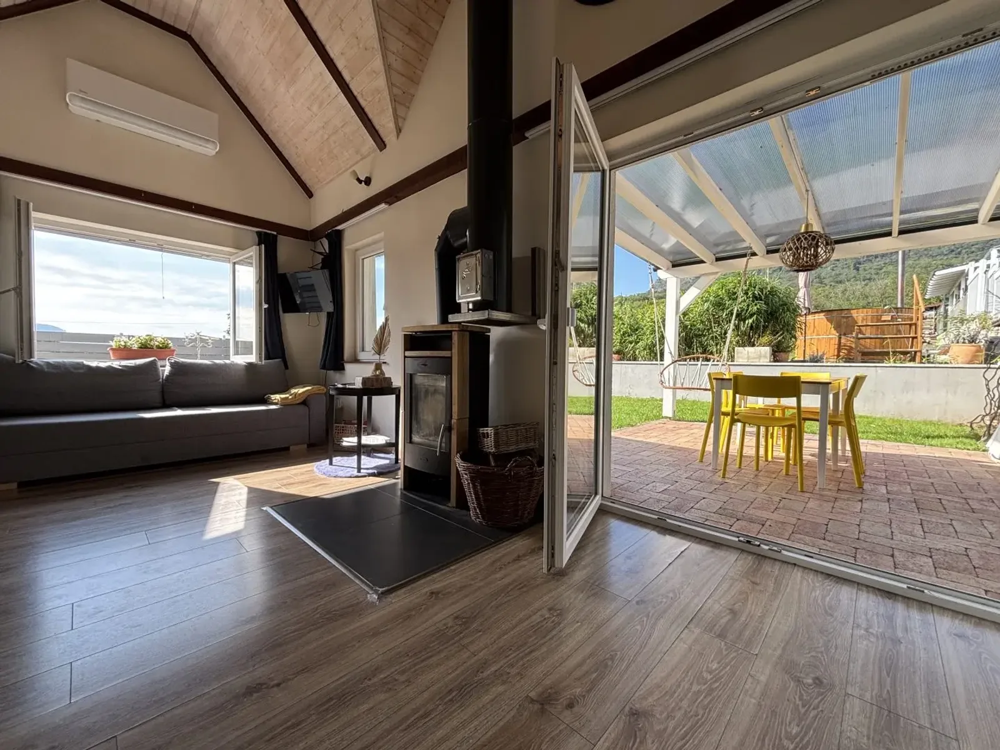
- role
- gallery + thumbnail
- gallery filename
- dandelion-d2-kisapati-gallery-01.webp
- thumb filename
- dandelion-d2-kisapati-thumb-01.webp
- review note
- TODO
- approved
- no
This is an internal review helper document.
This is not a frontend data source.
Images are loaded from the local public/images/accommodations/d2 structure.
Goal: visual validation before switching D2 gallery frontend paths.

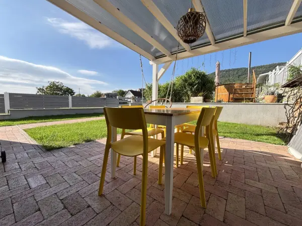
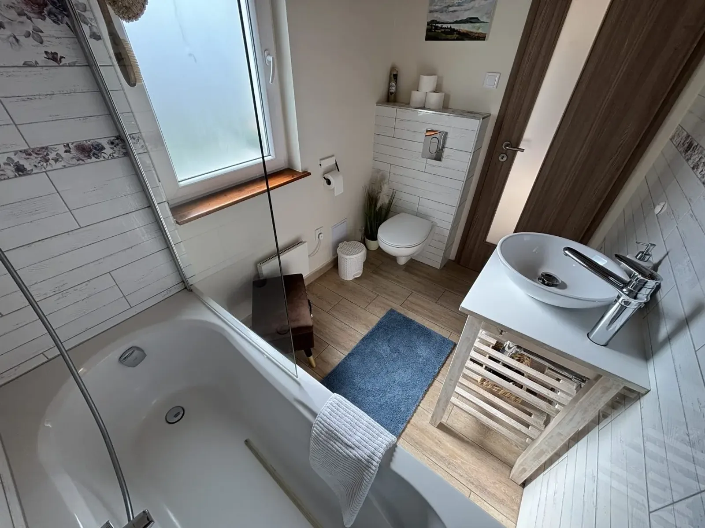
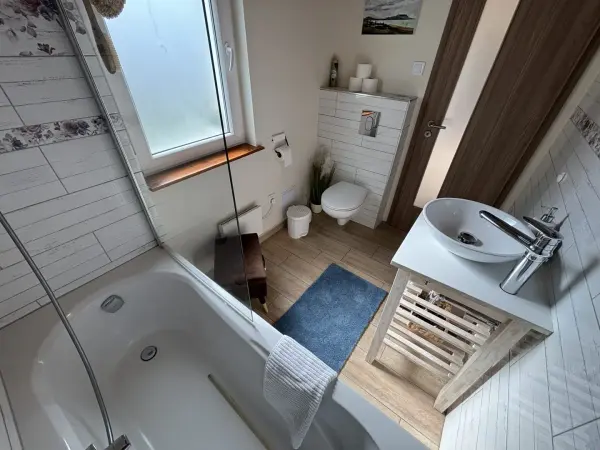
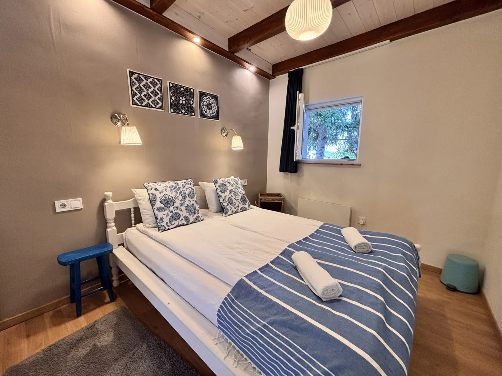
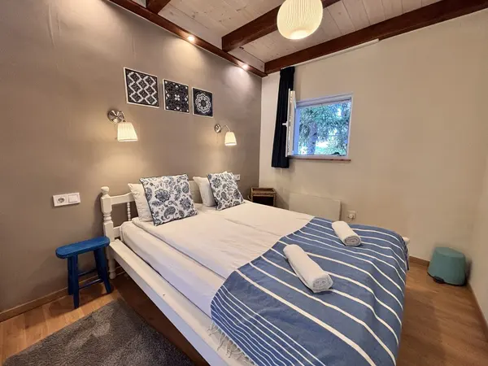
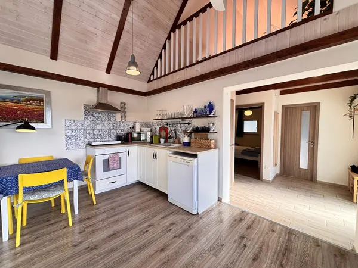
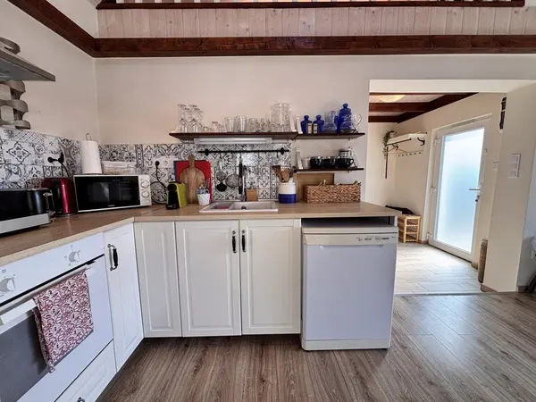
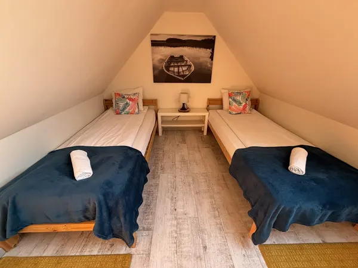
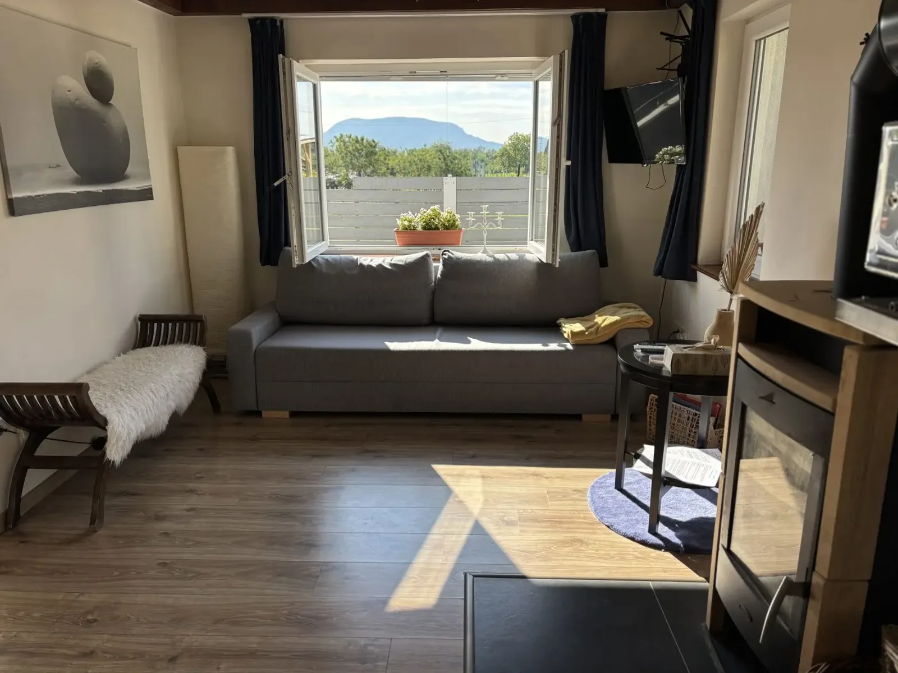
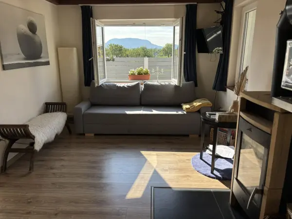
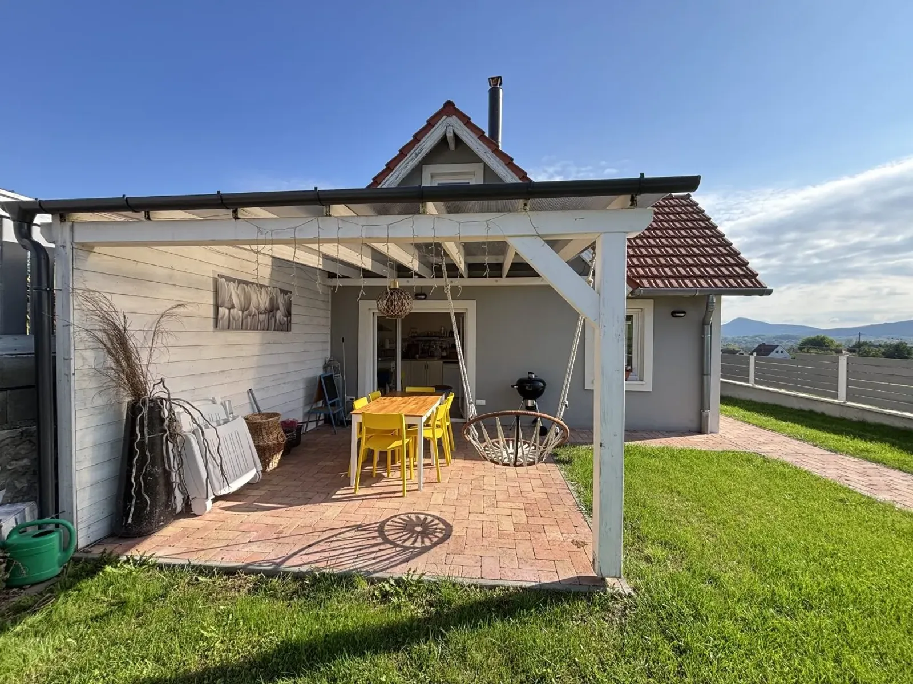
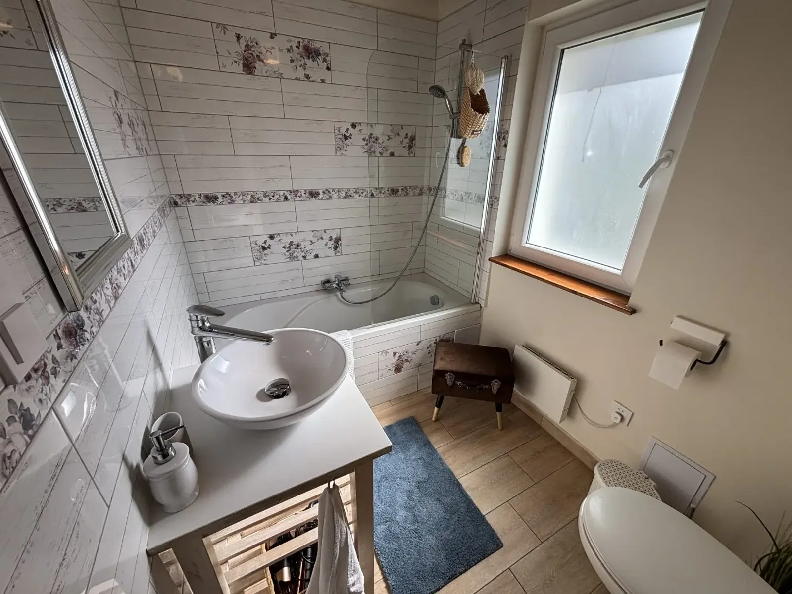
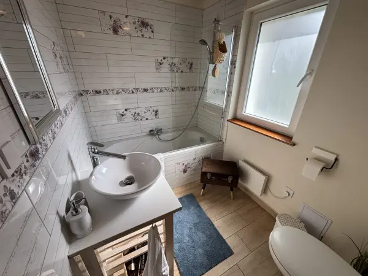